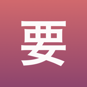

JLPT practice: N5 N4 N3 N2 N1
App Store →Free app with an in-app purchase
Mixing up similar patterns? See them side by side in real sentences, not just in prose. Plus scanning Japanese from a photo and an AI check on sentences you write.
Kaname teaches Japanese grammar the way real command of a language works: it does not ask whether you remember a rule, but whether you can use it.
The whole JLPT range – N5 through N1.
Every grammar point carries four separate mastery scores:
A session steers questions to wherever you are weakest. A pattern you recognise perfectly but keep confusing with a similar one will get mostly contrast questions. That is what separates Kaname from ordinary flashcards.
なら or たら? そう or らしい? はず or わけ? The app puts confusable patterns side by side in concrete situations and explains every time why this form is the natural one – and the other is not.
Intervals of 4 hours / 1 / 4 / 7 / 14 / 30 / 90 / 180 days, adjusted to your results. “Mastered” requires a high score in every competence that can be tested for that pattern, plus three successful reviews spread over at least three weeks. One good day is not enough.
New patterns from a higher level appear only once the previous level has settled into review. Instead of piling on material, the app makes sure the foundation actually holds.
Saw a sentence in a manga or a textbook? Take a photo. The text is recognized on your phone – the photo is never sent or saved anywhere. You pick a sentence from the recognized lines, correct it if needed, and save it.
Save a sentence you caught and pin it to the pattern you are practising – it comes back in your reviews as your own example. The catalog pattern stays canonical; your sentence sits beside it as a personal example.
Write your own sentence and the model tells you what exactly is off and why, instead of a bare “wrong”. It also spots grammar patterns in text you paste in.
This is an extra layer and entirely optional. Without it the app counts progress and schedules review exactly the same; every call happens on your explicit request, with the remaining count shown next to the button.
The whole of JLPT N5, with its contrast pairs and all four exercise types. No time limit, no session limit, no ads. Plus a few AI analysis calls each month.
Levels N4, N3, N2 and N1 – one at a time, in bundles, or all at once. A one-time purchase, no subscription and no account; access does not expire.
Anyone who bought Premium earlier gets N2 and N1 at no extra cost. The promise made in this app's description is kept.
AI Analysis is a separate subscription, because it is the only part that costs something every time it is used: PLN 14.99 monthly or PLN 119.99 yearly, auto-renewing, cancellable in your Apple ID settings. It does not cover JLPT levels and never will.
The network is used only by AI analysis, and only when you invoke it: the practiced pattern and the sentence you wrote go to the server. Your study history does not, nothing about you does, and a photo never does – the text in a photo is read by the phone itself.
Explanations and example sentences were written specifically for this app.
Kaname (要) is the rivet that holds a folding fan together – hence the figurative “the crux, the thing that matters”. Because that is what this is about: the difference that decides.
Terms of Use (EULA): https://www.apple.com/legal/internet-services/itunes/dev/stdeula/
Privacy Policy: https://jakub-dwojak-aseity.github.io/app-policies/kaname/1.2/en/privacy.html
The description above is the same text that stands on the App Store product page – it comes from the same file.